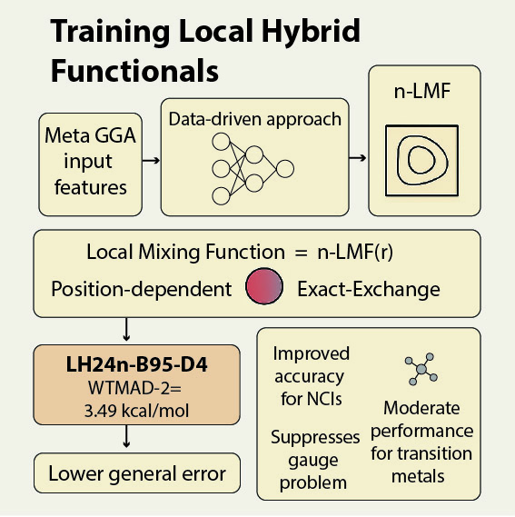
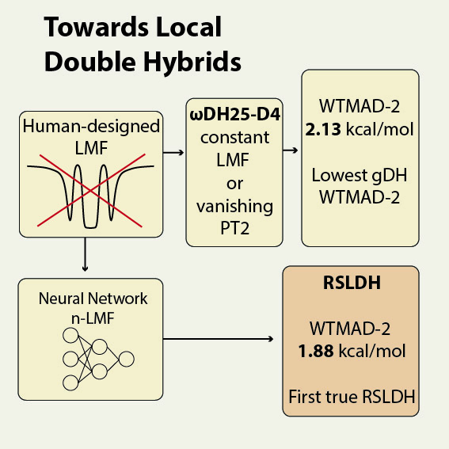
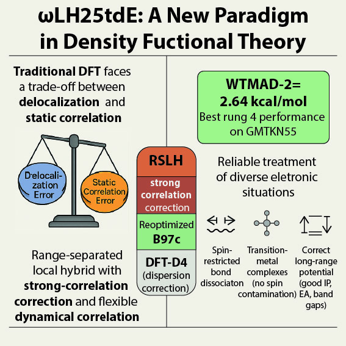
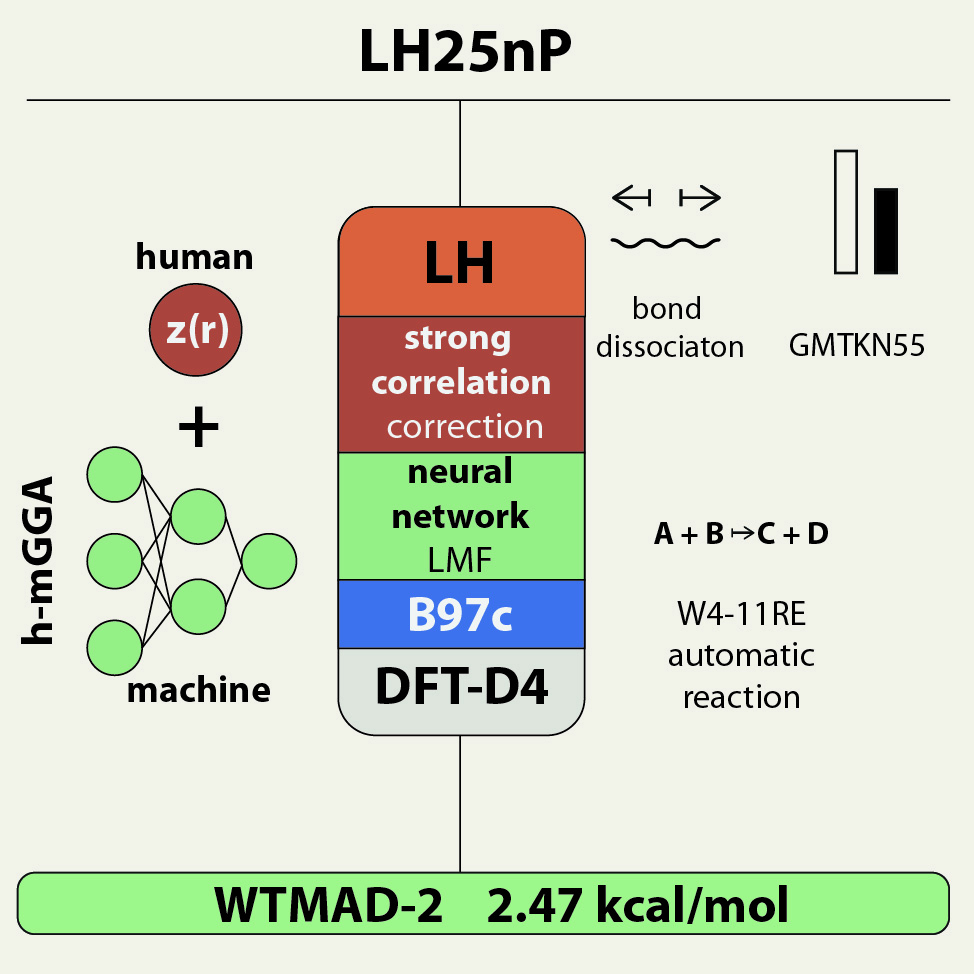

Overview
DFT is a scalable electronic-structure method used to compute energies, structures, and reaction barriers across chemistry and materials. Its speed comes from approximations (“functionals”) and better functionals can make entire workflows more accurate. My work combines compact ML components with physics constraints so models stay interpretable and stable. Alongside method development, I apply quantum chemistry to real chemical problems through long-running experimental collaborations.
🔧 What I build
- Data-driven local mixing functions
- Composite models (ML + physical detectors)
- Benchmark-driven optimization
🧠 ML + physics
- Training on reaction energies / barriers
- Careful constraints & smooth activations
- Designed to behave inside SCF iterations
🚀 Engineering
- Exporting NN weights to production codes
- Performance-aware data pipelines
- Reproducible benchmarking
🔬 Applied collaborations
- First-principles support for experimental groups
- Interpretation of NMR, EPR, IR spectra
- Testing new functionals on real systems
Quantum Chemistry – a quick primer
Quantum chemistry models electrons in molecules. Two key effects are exchange (from antisymmetry) and correlation (electrons avoiding each other beyond mean-field).
Wavefunction theory (WFT) starts with Hartree–Fock (exact exchange, missing correlation), and adding correlation systematically is typically computationally expensive. DFT models exchange and correlation together in a much more affordable way, but only through an approximation (an exchange–correlation functional).
Modern methods mix these ideas: hybrids blend Hartree–Fock exchange into DFT. Local hybrids make the mixing spatially dependent. Double hybrids add a perturbative correlation term.
Selected projects
Click a card to open a short, project summary (with links to papers).

LH24n: Neural local mixing function
Open →
Neural local double hybrids
Open →
ωLH25tdE: beyond the “zero‑sum” game
Open →
LH25nP: composite LMF (NN + SC detector)
Open →Working with experimentalists
Quantum chemistry is most useful when it answers a question that someone actually needs answered. Over the years I have contributed first-principles calculations to international collaborations across several spectroscopic and applied domains — helping interpret unexpected results, validate models against measurements, and rationalise structure–property relationships. Some of these projects also serve as testing ground for the new functionals developed in the method work above.
Paramagnetic NMR of transition-metal complexes
Open →Matrix-isolation IR spectroscopy of heavy-element fluorides
Open →Photophysics and EPR of organic radicals
Open →Actinide and lanthanide separation chemistry
Open →About
I earned my PhD in Chemistry at the University of Warsaw and now work as a researcher at Technische Universität Berlin. My focus is the design of next-generation density functionals—especially local hybrids and range-separated local hybrids— with an emphasis on interpretable, physically motivated ML components.
I enjoy bridging theory and engineering: taking an idea from a clean model, through training and validation, to a reliable implementation that can run in production workflows.
Alongside method work, I have spent years collaborating with experimental groups across Europe, applying quantum chemistry to spectroscopy, heavy-element chemistry, and separation problems. Both sides of the work feed each other: real chemical questions test the methods, and new methods open up problems that were previously out of reach.